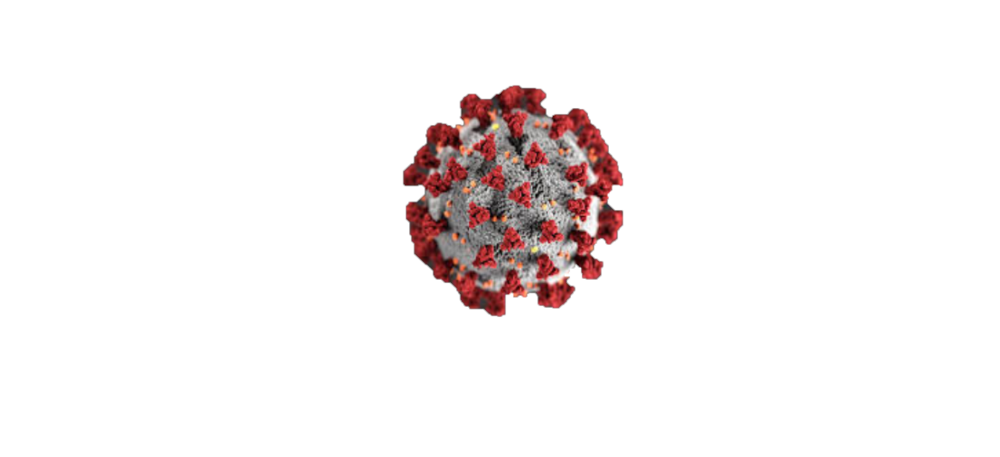

Let's fight against the evil

Coronaviruses are a group of related viruses that cause diseases in mammals and birds.In humans, coronaviruses
cause respiratory tract infections that can range from mild to lethal.Mild illnesses include some cases of
the common cold (which has other possible causes,predominantly rhinoviruses), while more lethal varieties
can cause SARS, MERS, and COVID-19.tract disease,symptoms in other species vary: in chickens, they
cause an upper respiratorywhile in cows and pigs they cause diarrhea. There are yet to be vaccines
or antiviral drugs to prevent or treat human coronavirus infections.
Discovery of Corona virus
Coronaviruses were first discovered in the 1930s when an acute respiratory infection of domesticated
chickens was shown to be caused by infectious bronchitis virus (IBV). Arthur Schalk and M.C. Hawn
described in 1931 a new respiratory infection of chickens in North Dakota.
The infection of new-born chicks was characterized by gasping and listlessness.
The mortality rate of the chicks was 40–90%. Fred Beaudette and Charles Hudson
aused the disease. In the 1940s, two more animal coronaviruses, mouse hepatitis virus
(MHV) and transmissible gastroenteritis virus (TGEV), were isolated. It was not realized
at the time that these three different viruses were related.
Human coronaviruses were discovered in the 1960s. They were isolated using two different
methods in the United Kingdom and the United States. E.C. Kendall, David Tyrrell
and Malcom Byone working at the Common Cold Unit of the British Medical Research Council
in 1960 isolated from a boy a novel common cold virus B814.The virus was not able
to be cultivated using standards techniques which had successfully cultivated
rhinoviruses, adenoviruses and other known common cold viruses. In 1965, Tyrrell
and Byone successfully cultivated the novel virus by serial passaging it through organ
culture of human embryonic trachea. The isolated virus when intranasally inoculated into
volunteers caused a cold and was inactivated by ether which indicated it had a lipid
envelope. Around the same time, Dorothy Hamre and John Procknow at the University
of Chicago isolated a novel cold virus 229E from medical students, which they grew
in kidney tissue culture. The novel virus 229E, like the virus strain B814,
when inoculated into volunteers caused a colsd and was inactivated by ether.
If you have these types of symptoms then go to doctor or
else please don't go out without any urgency.
"Prevention Is Better Than Cure."
Stay Home Stay Safe.

Please it is a request to everyone that always do the upper things which ever thing
is given in the upper image while in lockdown.
"Prevention is the Cure."
Stay doors Stay Safe.
*Click on the Confirmed/Recovered/Deaths buttons above to see the chart
individually.*